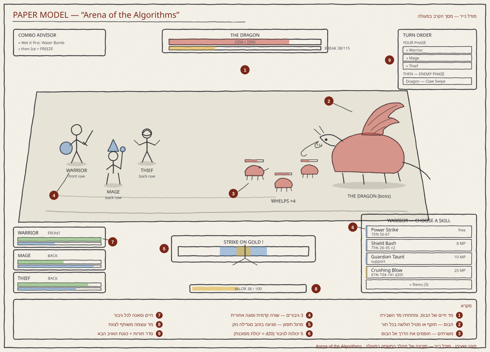
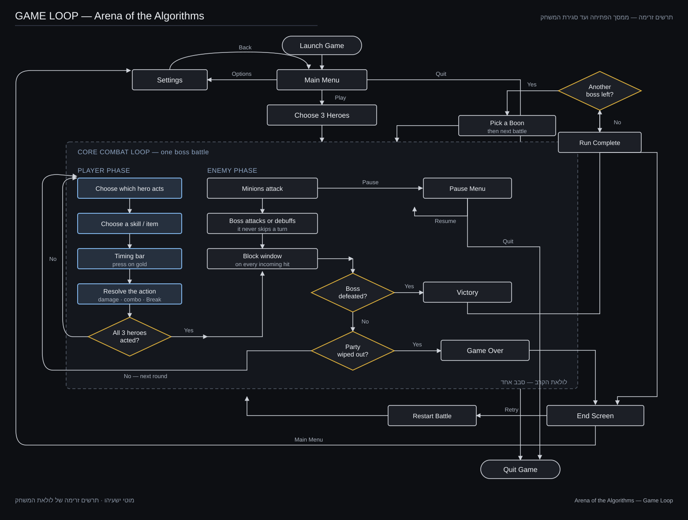

סקיצה מצוירת ביד של מהלך המשחק בפעולה — "צילום מסך" של הקרב, בסגנון תיאטרון איש־מקל. המספרים על הציור מפורטים במקרא שבתחתית.

זירת האלגוריתמים · מוטי ישעיהו
תרשים זרימה כללי, מהפעלת המשחק ועד סגירתו. המסגרת המקווקוות היא לולאת הקרב עצמה: שלב שחקן (3 גיבורים) ← שלב אויב ← בדיקת סיום ← סבב הבא.

זירת האלגוריתמים · מוטי ישעיהו